Manual de Usuario
MarkdownCheck — analizador léxico-sintáctico de Markdown a HTML
Proyecto 2 · Lenguajes Formales y de Programación · Sección B+ · Segundo semestre 2026
Diego Alejandro Barrios · Facultad de Ingeniería, Universidad de San Carlos de Guatemala
Contenido
- ¿Qué es MarkdownCheck?
- Requisitos
- Cómo ejecutar la aplicación
- Partes de la ventana
- Sintaxis Markdown soportada
- Cargar y analizar un archivo
- La tabla de tokens
- El árbol de derivación
- Errores: cómo leerlos y corregirlos
- Los reportes HTML
- Vista previa en vivo y advertencia de anidamiento
- Solución de problemas
1. ¿Qué es MarkdownCheck?
MarkdownCheck lee un documento escrito en Markdown (un archivo .md), revisa que esté bien escrito y lo convierte en una página HTML que se puede abrir en cualquier navegador.
El análisis tiene dos etapas:
- Análisis léxico. El programa separa el texto en piezas llamadas tokens: un "#" de encabezado, un "**" de negrita, un texto, un salto de línea…
- Análisis sintáctico. Revisa que esas piezas estén en un orden válido (por ejemplo, que una negrita que se abre también se cierre) y arma con ellas el árbol de derivación del documento.
Si el documento no tiene errores, el programa genera tres reportes: el documento convertido a HTML, sus estadísticas y una tabla de contenido. Si tiene errores, los muestra todos juntos, con la línea y la columna de cada uno, para que se puedan corregir de una sola vez.
Además de lo básico, MarkdownCheck reconoce listas numeradas, listas de tareas, texto tachado, enlaces, imágenes y tablas; muestra el documento formateado mientras se escribe, avisa cuando una lista o una cita está demasiado anidada y colorea el código en el Reporte 1.
2. Requisitos
| Programa | ¿Obligatorio? | Para qué se usa |
|---|---|---|
| Python 3.10 o superior | Sí | Ejecutar la aplicación. Tkinter, la librería de la ventana, viene incluida con Python en Windows. |
| Un navegador web | Sí | Abrir los reportes HTML. Sirve cualquiera: Chrome, Edge, Firefox. |
| Graphviz | No | Convertir el árbol de derivación (arbol.dot) en una imagen. Sin Graphviz, todo lo demás funciona igual. |
Verificar Python. En una terminal (PowerShell o Símbolo del sistema):
python --version
Debe mostrar "Python 3.10" o un número mayor. Si dice que el comando no existe, instale Python desde python.org y marque la casilla Add Python to PATH durante la instalación.
Instalar Graphviz (opcional). En Windows:
winget install graphviz
o descárguelo desde graphviz.org. Después de instalarlo, cierre y vuelva a abrir la terminal, y verifique con "dot -V".
3. Cómo ejecutar la aplicación
Abra una terminal en la carpeta Proyecto2 y ejecute:
python src/main.py
Para abrir la ventana con un archivo ya cargado, escriba la ruta después:
python src/main.py examples/ejemplo_valido.md
Desde Visual Studio Code. Abra la carpeta Proyecto2, vaya a la vista Ejecutar y depurar (Ctrl+Shift+D), elija MarkdownCheck (ventana) o MarkdownCheck (ejemplo valido) y presione F5.
Al iniciar se abre la ventana vacía:
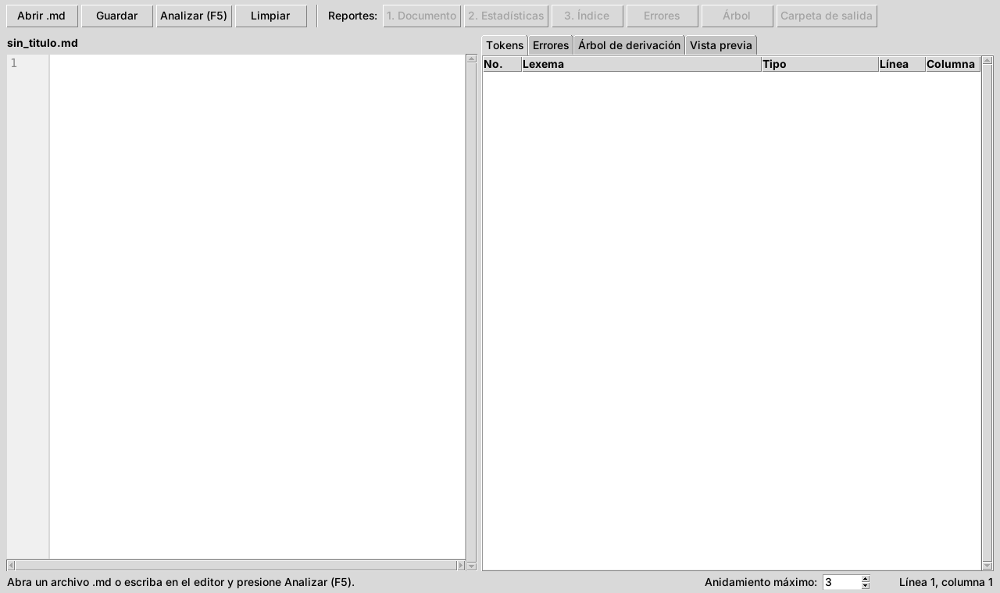
La carpeta examples trae archivos listos para probar:
| Archivo | Qué contiene |
|---|---|
| ejemplo_valido.md | El ejemplo del enunciado: todos los elementos, sin errores. |
| casos_borde.md | Casos especiales que el programa debe aceptar. |
| errores_lexicos.md | Un error léxico de cada tipo. |
| errores_sintacticos.md | Errores de indentación y de citas. |
| casos/ | Los 15 casos del documento Casos de Prueba. El caso 14 usa todo el alcance opcional (listas numeradas, tareas, tachado, enlaces, imágenes y tablas). |
4. Partes de la ventana
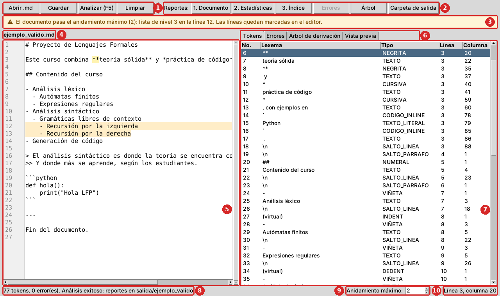
Cada número de la imagen corresponde a una fila de la tabla siguiente.
| No. | Parte | Para qué sirve |
|---|---|---|
| 1 | Botones de archivo | Abrir .md carga un archivo (Ctrl+O). Guardar guarda lo que hay en el editor (Ctrl+S). Analizar revisa el documento (F5). Limpiar vacía el editor y los resultados. |
| 2 | Botones de reportes | Abren en el navegador los reportes del último análisis. Solo se activan los que existen: sin errores, los reportes 1, 2 y 3; con errores, el de errores. Árbol y Carpeta de salida están siempre disponibles después de analizar. |
| 3 | Advertencia de anidamiento | Solo aparece cuando una lista o una cita pasa el anidamiento máximo (sección 11). En la imagen el máximo es 2 y la lista llega al nivel 3. |
| 4 | Nombre del archivo | El archivo que está abierto en el editor. |
| 5 | Editor | El texto del documento, con números de línea. Se puede escribir y corregir aquí mismo. Las líneas demasiado anidadas se marcan en amarillo. |
| 6 | Pestañas de resultados | Tokens, Errores, Árbol de derivación y Vista previa. La pestaña Errores muestra entre paréntesis cuántos hay. |
| 7 | Resultado | El contenido de la pestaña elegida. |
| 8 | Barra de estado | El resumen del último análisis: cuántos tokens y errores encontró, y dónde guardó los reportes. |
| 9 | Anidamiento máximo | Cuántos niveles de lista o de cita se permiten antes de mostrar la advertencia (de 1 a 20; empieza en 3). |
| 10 | Posición del cursor | La línea y la columna donde está el cursor en el editor. Sirve para ubicar la posición que indica un error. |
5. Sintaxis Markdown soportada
| Elemento | Cómo se escribe | Resultado |
|---|---|---|
| Encabezado | De 1 a 6 "#", un espacio y el título: "## Título" | Un título de nivel 1 a 6. |
| Párrafo | Una o más líneas de texto seguidas. | Un párrafo. |
| Negrita | "**texto**" | texto |
| Cursiva | "*texto*" | texto |
| Negrita y cursiva | "***texto***", o una dentro de la otra: "**muy *importante***" | Las dos combinadas. |
| Código en línea | "`variable`" | variable, sin interpretar lo que hay adentro. |
| Lista | "-", "*" o "+", un espacio y el texto: "- Elemento" | Una lista con viñetas. |
| Sublista | Dos espacios más de sangría por cada nivel: "- Subelemento" | Una lista dentro de otra, sin límite de niveles. |
| Cita | ">", un espacio y el texto: "> Cita" | Un bloque de cita. |
| Cita anidada | ">>" o "> >" y el texto: ">> Cita interna" | Una cita dentro de otra. |
| Bloque de código | Una línea con "```" (opcionalmente con el lenguaje: "```python"), el código, y otra línea con "```" | El código tal como está escrito. |
| Regla horizontal | Tres o más guiones solos en una línea: "---" | Una línea separadora. |
Y del alcance opcional:
| Elemento | Cómo se escribe | Resultado |
|---|---|---|
| Lista numerada | Un número, un punto, un espacio y el texto: "1. Primero" | Una lista numerada. Empieza en el número del primer ítem. |
| Lista de tareas | Después de la viñeta (o del número), "[ ]" o "[x]" y un espacio: "- [x] Hecho" | Una casilla vacía o marcada. |
| Tachado | "~~texto~~" | |
| Enlace | "[texto](https://direccion)" | Un enlace; el texto puede tener negrita, cursiva o código. |
| Imagen | "" | La imagen; si no se encuentra, se ve la descripción. |
| Tabla | Una fila de títulos, una fila separadora y las filas de datos, cada una entre barras verticales (ejemplo abajo). | Una tabla. En la fila separadora, ":--" alinea a la izquierda, ":-:" al centro y "--:" a la derecha. |
Ejemplo de tabla:
| Token | Ejemplo | Fase |
|:--------|:-------:|-------:|
| NEGRITA | `**` | Léxico |
Reglas que conviene recordar
- Una línea en blanco separa bloques. Dos líneas de texto seguidas forman un mismo párrafo; para empezar otro párrafo, deje una línea vacía. Lo mismo pasa con las listas y las citas: una línea en blanco termina la lista.
- Cada nivel de lista son exactamente 2 espacios más. Pasar de 0 a 4 espacios de una vez, o usar una cantidad impar (3 espacios), es un error de indentación. Un tabulador cuenta como 2 espacios.
- La negrita, la cursiva y el código en línea se cierran en el mismo bloque. En un párrafo pueden cerrarse en una línea siguiente; en un encabezado, un ítem de lista o una línea de cita, en la misma línea.
- Después de "#", de la viñeta y de ">" va un espacio. "#Título" no es un encabezado sino texto, y ">Cita" es una cita mal formada.
- Un asterisco suelto abre una cursiva. En "5 * 3" el "*" se toma como el inicio de una cursiva que nunca se cierra. Para escribir un asterisco como texto, póngalo en código en línea: "`5 * 3`".
- Dentro de un bloque de código no se interpreta nada. "**", "#" o "-" ahí adentro son parte del código.
- Un enlace va completo en una línea. "[texto](direccion)" sin espacios en la dirección. Si falta algo, los corchetes se quedan como texto normal (no es un error).
- Cada fila de una tabla empieza y termina con "|", y todas tienen tantas celdas como la fila de títulos. Una negrita o un tachado se cierran dentro de su celda.
- Las imágenes se buscan desde la carpeta del reporte ("salida/<nombre del archivo>/"). Una dirección de internet ("https://…") funciona desde cualquier lugar si hay conexión.
- Los archivos deben estar en UTF-8, la codificación normal de VS Code y del Bloc de notas actual.
6. Cargar y analizar un archivo
- Haga clic en Abrir .md (o Ctrl+O) y elija el archivo. Su contenido aparece en el editor y su nombre en la parte superior.
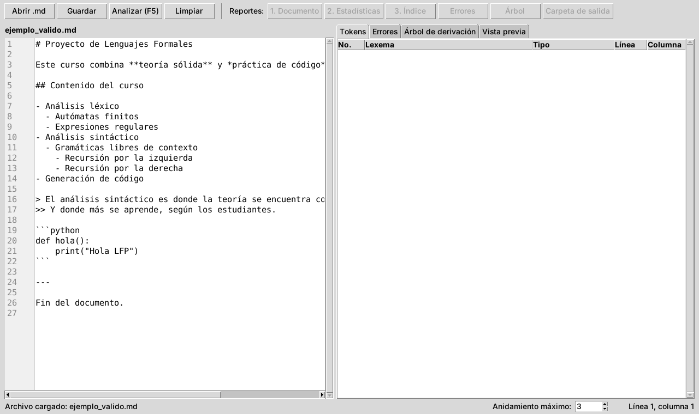
- Haga clic en Analizar (o F5). En la barra de estado aparece el resultado, por ejemplo: 77 tokens, 0 error(es). Análisis exitoso.
- Revise las pestañas Tokens, Errores y Árbol de derivación (secciones 7 a 9).
- Abra los reportes con los botones de la barra superior (sección 10).
Corregir y volver a analizar. El botón Analizar revisa lo que está escrito en el editor, no el archivo guardado. Puede corregir un error en el editor y presionar F5 de nuevo sin guardar. Cuando el resultado le parezca bien, use Guardar para guardar los cambios en el archivo.
Escribir un documento nuevo. Use Limpiar, escriba en el editor y presione Analizar. Al guardar, el programa pide el nombre del archivo.
7. La tabla de tokens
La pestaña Tokens muestra cada pieza que reconoció el analizador léxico, en el orden del archivo.
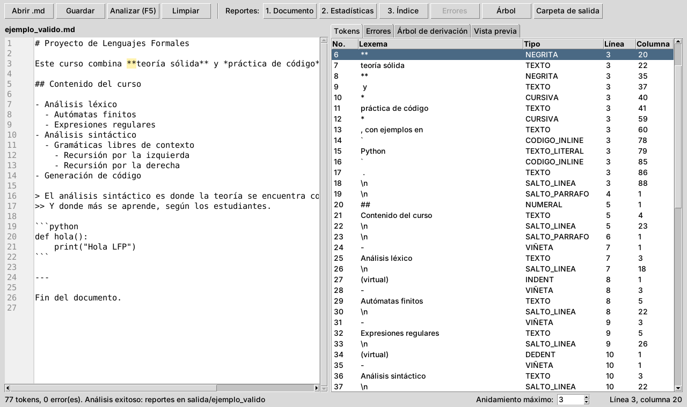
| Columna | Significado |
|---|---|
| No. | Orden del token en el archivo. |
| Lexema | El texto exacto que forma el token. "\n" es un salto de línea; (virtual) indica un token que no tiene texto en el archivo. |
| Tipo | La categoría del token (tabla de abajo). |
| Línea, Columna | Dónde empieza el token. La primera línea y la primera columna son la 1. |
Haga clic en una fila y el editor salta a ese token y lo resalta en amarillo. En la imagen se eligió el token 6, el "**" que abre la negrita de la línea 3.
| Tipo | Qué es |
|---|---|
| NUMERAL | Los "#" de un encabezado. |
| TEXTO | Texto normal. |
| NEGRITA, CURSIVA | Los "**" y "*" que abren o cierran el énfasis. |
| CODIGO_INLINE | Los acentos graves de un código en línea. |
| TEXTO_LITERAL | Texto que no se interpreta: el interior de un código en línea, cada línea de un bloque de código o la descripción de una imagen. |
| VIÑETA | El "-", "*" o "+" de un elemento de lista. |
| INDENT, DEDENT | Tokens virtuales: la lista sube o baja un nivel. |
| CITA | Los ">" de una cita. Su cantidad es el nivel. |
| CERCA_CODIGO, LENGUAJE_CODIGO | Los "```" de un bloque de código y el lenguaje que lo acompaña. |
| REGLA_HORIZONTAL | Los "---" de una regla. |
| SALTO_LINEA | El final de una línea con contenido. |
| SALTO_PARRAFO | Una línea en blanco. |
| FIN | El final del archivo. |
| NUMERO_LISTA, CASILLA | El "1." de una lista numerada y el "[ ]" o "[x]" de una tarea. |
| TACHADO | Los "~~" que abren o cierran un tachado. |
| CORCHETE_ABRE, IMAGEN_ABRE, CORCHETE_CIERRA | El "[" de un enlace, el "![" de una imagen y el "]" que los cierra. |
| PARENTESIS_ABRE, URL, PARENTESIS_CIERRA | La dirección de un enlace o una imagen, con sus paréntesis. |
| BARRA, SEPARADOR_TABLA | Cada barra vertical de una fila de tabla, y la fila separadora completa. |
8. El árbol de derivación
La pestaña Árbol de derivación muestra cómo el analizador sintáctico organizó los tokens según la gramática del lenguaje.
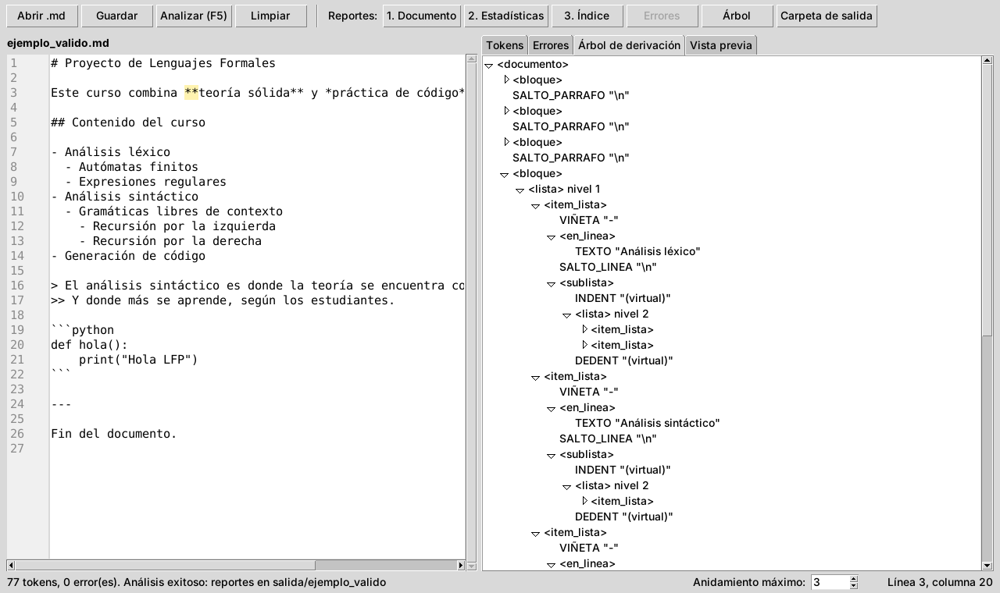
- Los nombres entre "< >", como <lista> o <encabezado>, son las partes de la gramática. Los demás son tokens, con su lexema entre comillas.
- Haga clic en el triángulo de un nodo para abrirlo o cerrarlo. Al analizar, los primeros niveles quedan abiertos.
- Las listas y las citas indican su nivel: en la imagen, la lista "nivel 2" está dentro de un elemento de la lista "nivel 1".
El mismo árbol también se guarda como imagen (sección 10.5).
9. Errores: cómo leerlos y corregirlos
Si el documento tiene errores, al analizar se abre la pestaña Errores. El análisis no se detiene en el primer error: los muestra todos, ordenados por posición.
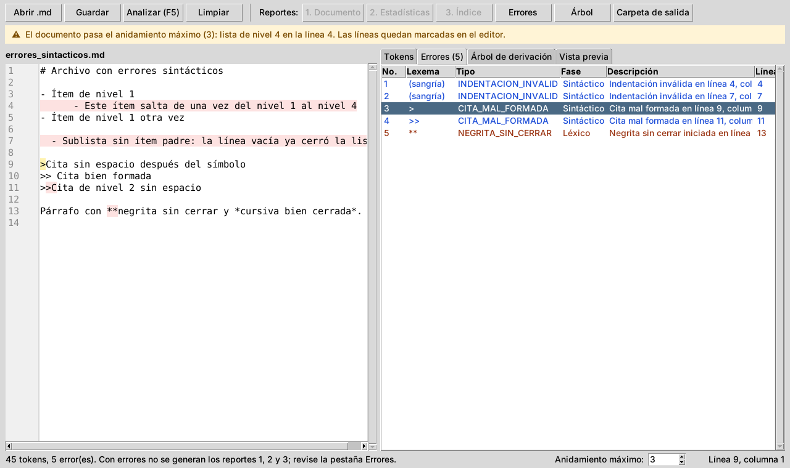
| Columna | Significado |
|---|---|
| No. | Número del error. |
| Lexema | El texto que causó el error. (sangría) indica un problema con los espacios del inicio de la línea. |
| Tipo | La categoría del error (tabla de abajo). |
| Fase | Léxico (en rojo oscuro): un problema con las piezas del texto. Sintáctico (en azul): las piezas están bien, pero en un orden que no es válido. |
| Descripción | El mensaje, con la línea y la columna donde empieza el problema. |
| Línea, Columna | La posición del error. En un error de sangría es la del guion o el número del elemento de lista. |
Haga clic en un error y el editor salta a esa posición y la resalta. Los errores también quedan marcados en rojo en el editor. Con errores, los reportes 1, 2 y 3 no se generan: corrija los errores y vuelva a presionar Analizar.
| Tipo de error | Fase | Causa | Cómo corregirlo |
|---|---|---|---|
| NEGRITA_SIN_CERRAR | Léxico | Se abrió "**" y el bloque (el párrafo, el ítem, el encabezado o la línea de cita) terminó sin cerrarlo. | Agregue el "**" de cierre antes de que termine el bloque. |
| CURSIVA_SIN_CERRAR | Léxico | Se abrió "*" y el bloque terminó sin cerrarlo. | Agregue el "*" de cierre, o ponga el asterisco dentro de código en línea si era un asterisco literal. |
| CODIGO_INLINE_SIN_CERRAR | Léxico | Un acento grave sin su pareja en el mismo bloque. | Agregue el acento grave de cierre. |
| BLOQUE_CODIGO_SIN_CERRAR | Léxico | El archivo terminó dentro de un bloque de código. | Agregue una línea con "```" al final del código. |
| ENCABEZADO_INVALIDO | Léxico | Más de 6 "#" en un encabezado. | Use de 1 a 6 "#". |
| INDENTACION_INVALIDA | Léxico | La sangría de un elemento de lista no es múltiplo de 2 (por ejemplo, 3 espacios). | Use 2, 4, 6… espacios. |
| INDENTACION_INVALIDA | Sintáctico | La sangría sube más de un nivel de una vez (de 0 a 4 espacios), o una sublista no tiene elemento padre (por ejemplo, después de una línea en blanco). | Suba de 2 en 2 espacios, y no deje líneas en blanco dentro de una lista. |
| CITA_MAL_FORMADA | Sintáctico | Falta el espacio después del último ">". | Escriba "> texto" o ">> texto". |
| TACHADO_SIN_CERRAR | Léxico | Se abrió "~~" y el bloque terminó sin cerrarlo. | Agregue el "~~" de cierre. |
| TABLA_MAL_FORMADA | Sintáctico | A la tabla le falta la fila de títulos o la fila separadora (la de guiones), la separadora se repite, o una fila no termina con barra vertical o no tiene tantas celdas como la de títulos. | Revise la fila que indica el mensaje. |
El reporte de errores
El botón Errores abre la misma tabla como página HTML, útil para imprimirla o compartirla.
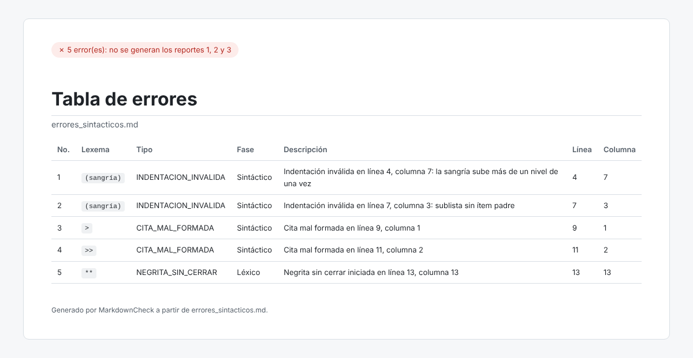
10. Los reportes HTML
Cada análisis guarda sus archivos en la carpeta salida, en una subcarpeta con el nombre del archivo analizado. Por ejemplo, al analizar ejemplo_valido.md se crea salida/ejemplo_valido/. El botón Carpeta de salida abre esa carpeta. Cada análisis borra primero los reportes del análisis anterior del mismo archivo, así la carpeta solo tiene los del último.
| Archivo | Cuándo se genera | Botón |
|---|---|---|
| reporte1_documento.html | Sin errores | 1. Documento |
| reporte2_estadisticas.html | Sin errores | 2. Estadísticas |
| reporte3_indice.html | Sin errores | 3. Índice |
| reporte_errores.html | Con errores | Errores |
| arbol.dot y arbol.png | Siempre (arbol.png solo si Graphviz está instalado) | Árbol |
Los reportes son páginas independientes: se pueden copiar a otra computadora y abrir con doble clic, sin MarkdownCheck.
10.1 Reporte 1: Documento
Es el documento convertido a HTML: los encabezados son títulos, las listas y las citas conservan su anidamiento, y el código se muestra tal como está escrito. Si el bloque de código dice su lenguaje ("```python"), sus palabras clave, textos y comentarios se colorean; el reporte trae lo necesario para hacerlo, así que funciona sin internet. La etiqueta verde de arriba confirma que el análisis no tuvo errores.
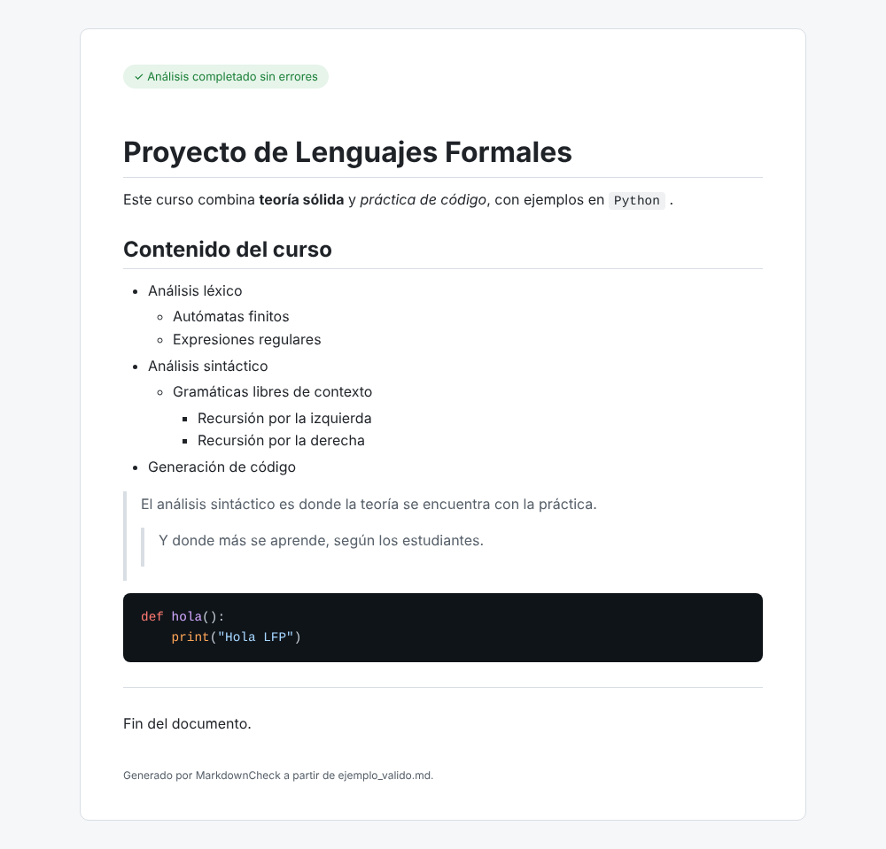
Así se ve el caso 14, que usa el alcance opcional: el tachado, el enlace, la lista numerada con tareas, la tabla con sus alineaciones y una imagen.
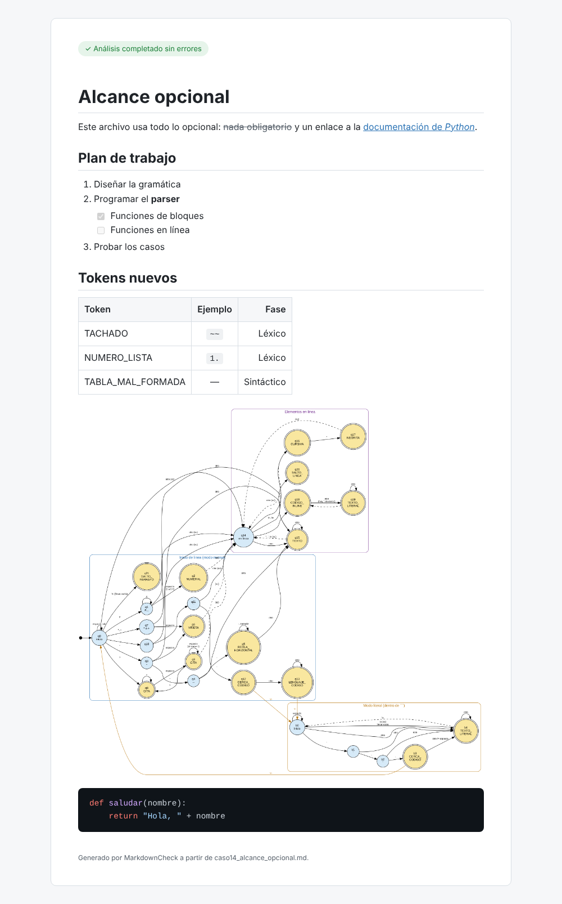
10.2 Reporte 2: Estadísticas
Un resumen en números del documento:
- Tarjetas superiores: total de palabras, párrafos, encabezados, listas, ítems de lista, citas, líneas de cita y bloques de código.
- Encabezados por nivel: una barra por cada nivel, de H1 a H6. La más larga corresponde al nivel con más encabezados.
- Profundidad máxima de anidamiento: cuántos niveles alcanzan la lista y la cita más anidadas.
- Elementos en línea y separadores: cuántos tramos hay de negrita, cursiva y código en línea, y cuántas reglas horizontales.
- Alcance opcional: solo aparece si el documento los usa. Cuenta las listas numeradas, las tareas (y cuántas están hechas), los tachados, los enlaces, las imágenes y las tablas.
Las palabras de los bloques de código y las descripciones de las imágenes no se cuentan.
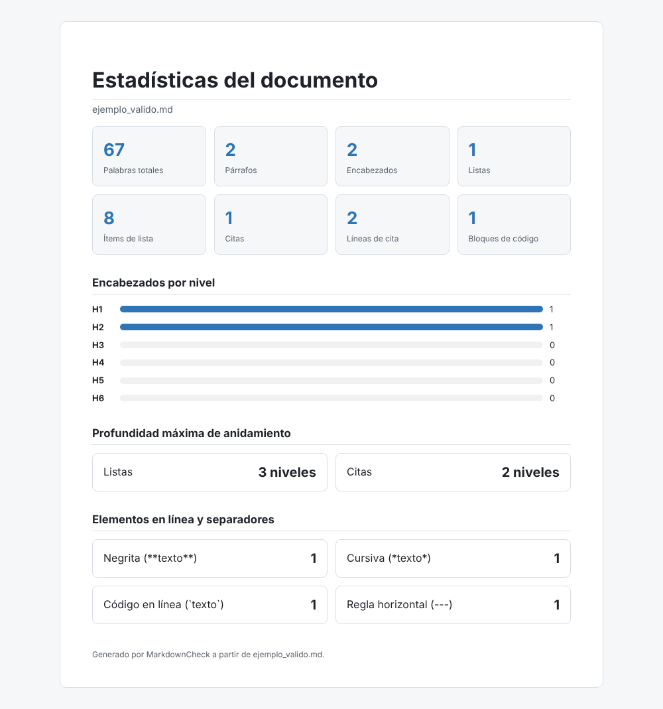
10.3 Reporte 3: Índice
La tabla de contenido del documento, armada con sus encabezados. Cada entrada indica su nivel (H1, H2…) y tiene más sangría cuanto más profundo es el nivel.
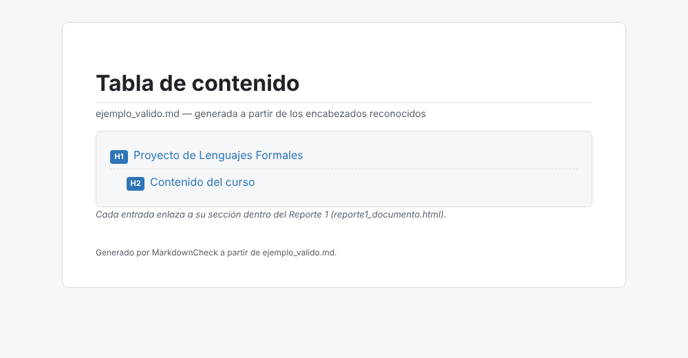
Navegar. Haga clic en una entrada y se abre el Reporte 1 justo en esa sección. Por ejemplo, al hacer clic en Contenido del curso:
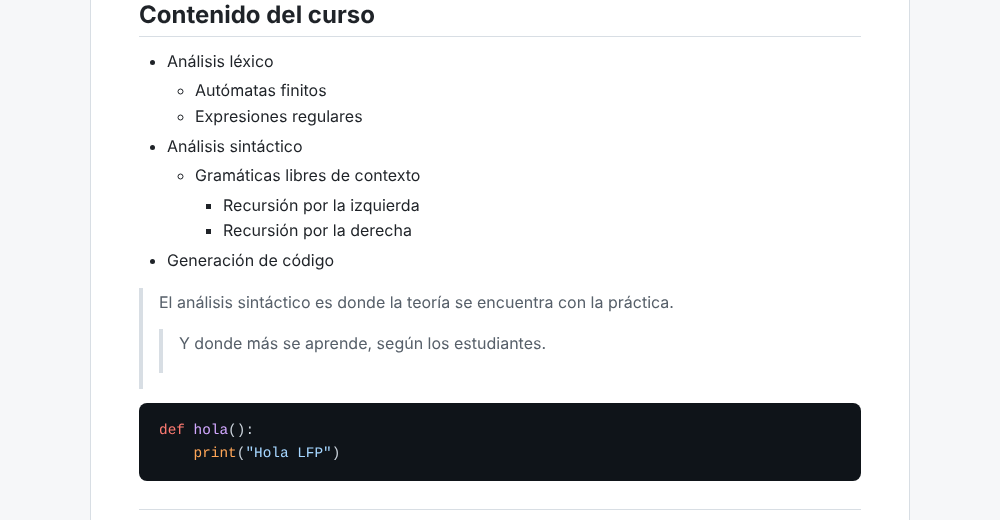
Para que los enlaces funcionen, los dos reportes deben estar en la misma carpeta, como los deja el programa. Si el documento no tiene encabezados, el reporte lo indica en lugar de mostrarse vacío.
10.4 Reporte de errores
Se describe en la sección 9.
10.5 Árbol de derivación como imagen
El botón Árbol abre arbol.png, el árbol de derivación completo: la raíz <documento> en azul oscuro, las partes de la gramática en azul claro y los tokens en amarillo. Si Graphviz no está instalado, el botón avisa y abre la carpeta donde quedó arbol.dot, que se puede convertir en imagen después con:
dot -Tpng arbol.dot -o arbol.png
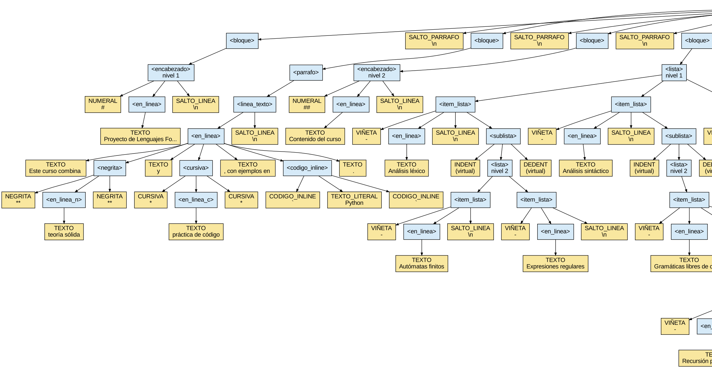
11. Vista previa en vivo y advertencia de anidamiento
11.1 Vista previa
La pestaña Vista previa muestra el documento ya formateado, dentro de la misma ventana: títulos grandes, negrita, cursiva, tachado, listas con su viñeta o su número, casillas de las tareas, citas con su barra, tablas en columnas y el código sobre fondo oscuro.
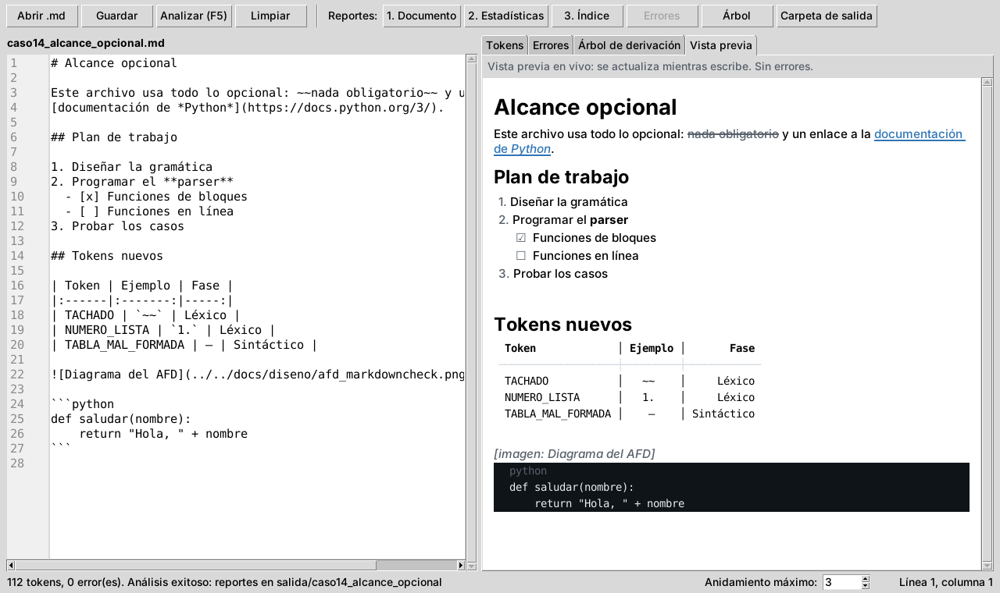
- Se actualiza sola mientras escribe, un instante después de dejar de teclear. No hace falta presionar Analizar.
- Los enlaces se abren con un clic en el navegador.
- Las imágenes se indican con su descripción, por ejemplo [imagen: Diagrama del AFD]; en el Reporte 1 sí se ven.
- Si el texto tiene errores, la vista previa muestra lo que se pudo reconocer y lo avisa arriba. Las tablas y los reportes no cambian hasta que se presione Analizar.
11.2 Advertencia de anidamiento
En la barra inferior, Anidamiento máximo indica cuántos niveles de lista o de cita se permiten (empieza en 3). Si el documento pasa ese número, aparece una franja amarilla arriba del editor con el nivel más profundo y su línea, y las líneas demasiado anidadas se marcan en amarillo.
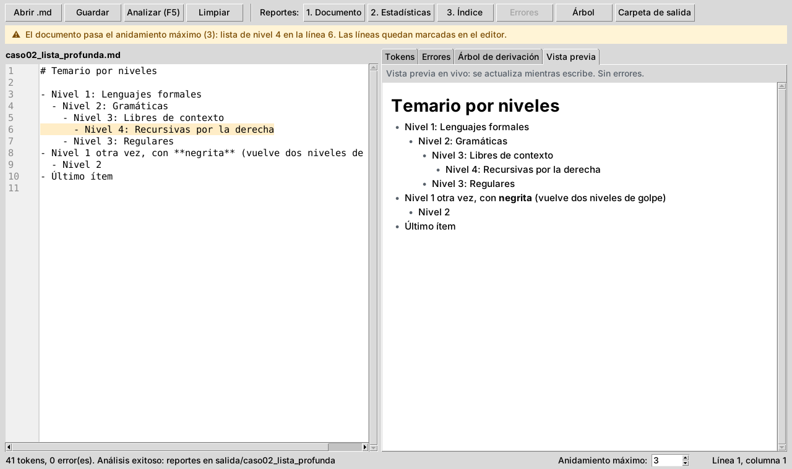
La advertencia no es un error: el documento se analiza igual y los reportes se generan. Cambie el número con las flechas o escribiéndolo, y la franja se actualiza al momento; también cambia mientras escribe en el editor.
12. Solución de problemas
| Problema | Causa probable | Solución |
|---|---|---|
| python no se reconoce como comando | Python no está instalado o no está en el PATH. | Instale Python y marque Add Python to PATH, o pruebe con "py src/main.py". |
| "No module named 'tkinter'" | En Linux, Tkinter se instala aparte. | "sudo apt install python3-tk". En Windows viene incluido. |
| Solo se pueden analizar archivos Markdown con extensión .md | Se eligió un archivo con otra extensión (.txt, por ejemplo). | Cambie la extensión del archivo a .md, o copie su contenido en el editor y presione Analizar. |
| El archivo no está en UTF-8 | El archivo se guardó con otra codificación. | Ábralo en VS Code y use Guardar con codificación → UTF-8. |
| Los botones de los reportes están grises | Todavía no se analizó, o el análisis tuvo errores. | Presione Analizar; si hay errores, corríjalos. |
| El botón Árbol no abre una imagen | Graphviz no está instalado. | Instálelo (sección 2) o convierta arbol.dot con el comando de la sección 10.5. |
| Un "*" produce CURSIVA_SIN_CERRAR | Un asterisco suelto siempre abre cursiva. | Escríbalo como código en línea: "`*`". |
| Una sublista da INDENTACION_INVALIDA | La sangría no es de 2 en 2, o hay una línea en blanco antes de la sublista. | Revise los espacios y quite la línea en blanco. |
| Un enlace se ve con sus corchetes, como texto | La dirección tiene espacios, falta el ")" o hay otro "[" adentro del texto. | Escriba "[texto](direccion)" completo en una línea. |
| Una imagen no se ve en el Reporte 1 | La ruta no existe desde la carpeta del reporte. | Use una ruta relativa a "salida/<nombre>/" o una dirección "https://…". |
| El código del Reporte 1 no sale coloreado | El bloque no dice su lenguaje. | Escriba el lenguaje después de las tres comillas: "```python". |
| Aparece la franja amarilla de anidamiento | Una lista o una cita pasa el máximo de la barra inferior. | Suba el máximo o reduzca la sangría; no es un error. |